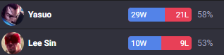
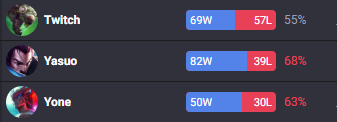
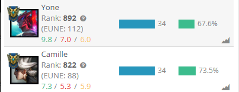
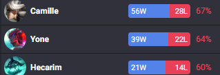
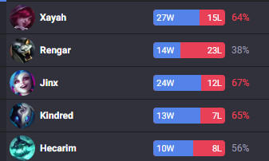

Začátky
League of Legends jsem začal hrát v roce 2016. Bylo mi okolo 9 let a neměl jsem ponětí o jakékoliv kompetetivní stránce her.

League of Legends jsem začal hrát v roce 2016. Bylo mi okolo 9 let a neměl jsem ponětí o jakékoliv kompetetivní stránce her.
V roce 2020 jsem se porpvé dostal do diamond ranku, což je ~3% nejlepších hráčů. V tu dobu jsem nejvíce hrál Yasua a skončil jsem s průměrem výher 63%.

V této sezóně jsem se začal více soustředit na hraní více postav, seznamoval jsem se s esportem a zlepšoval jsem své schopnosti, hlavně čtení mapy a předvídání soupeřů. Ukončil jsem sezónu s průměrem výher okolo 65%, a mé nejhranější postavy se pohybovali mezi 55%-70%.

V sezóně 2022 jsem se dále soustředil na nové postavy a nové herní styly. Držel jsem se ve vyšší části Diamondu. Sezónu jsem skončil s průměrem výher 68%, moje nejlepší postavy se drželi okolo 70% a podle analytické stránky Leagueofgraphs jsem byl mezi nejlepším 1000 hráčů za dané postavy.

V sezóně 2023 jsem se poprvé dostal do Masteru, od té doby se pohybuji okolo 100 LP. Na svém účtě nehraju dost, aby průměr výher měl smysl a ani se nesnažím o vyšší rank.
